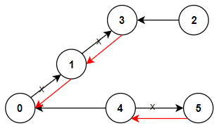
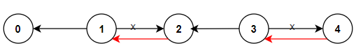

| Category | Difficulty | Likes | Dislikes |
|---|---|---|---|
| Algorithms | Medium | 4581 | 147 |
microsoft | amazon | tiktok
There are n cities numbered from 0 to n - 1 and n - 1 roads such that there is only one way to travel between two different cities (this network form a tree). Last year, The ministry of transport decided to orient the roads in one direction because they are too narrow.
Roads are represented by connections where connections[i] = [ai, bi] represents a road from city ai to city bi.
This year, there will be a big event in the capital (city 0), and many people want to travel to this city.
Your task consists of reorienting some roads such that each city can visit the city 0. Return the minimum number of edges changed.
It's guaranteed that each city can reach city 0 after reorder.
Example 1:

Input: n = 6, connections = [[0,1],[1,3],[2,3],[4,0],[4,5]]
Output: 3
Explanation: Change the direction of edges show in red such that each node can reach the node 0 (capital).Example 2:

Input: n = 5, connections = [[1,0],[1,2],[3,2],[3,4]]
Output: 2
Explanation: Change the direction of edges show in red such that each node can reach the node 0 (capital).Example 3:
Input: n = 3, connections = [[1,0],[2,0]]
Output: 0
Constraints:
2 <= n <= 5 * 104connections.length == n - 1connections[i].length == 20 <= ai, bi <= n - 1ai != bi